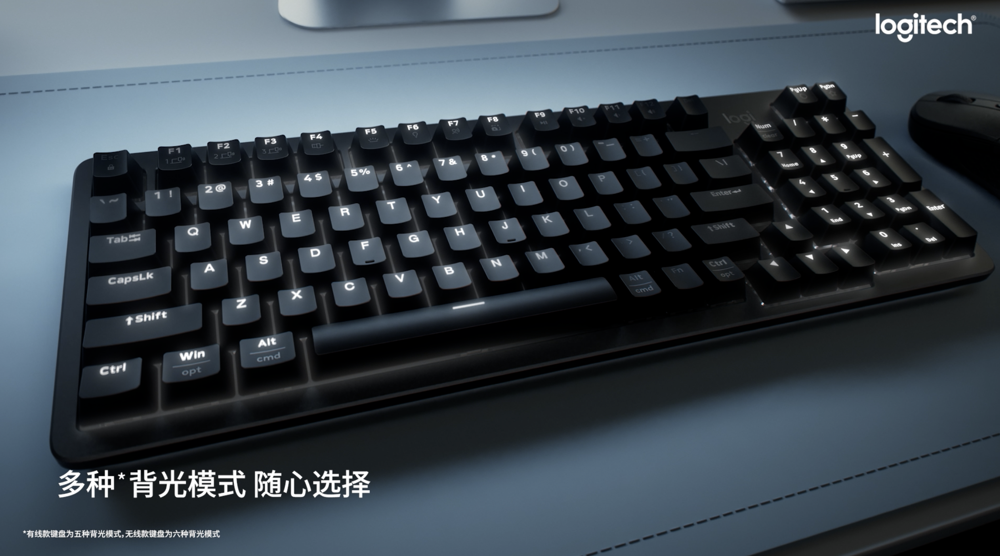

罗技 X 铁豆｜罗技灵砚系列键盘TVC
角色 Role：监制 Producer
围绕罗技新品 K868 客制化机械键盘，以赛车元素及中国首位 F4 女赛车手铁豆为线索， 将“1000Hz 极速响应、Gasket 缓震结构、AI Portal”等卖点视觉化呈现。
按类型整理：TVC、宣传片、电影短片。
围绕罗技新品 K868 客制化机械键盘，以赛车元素及中国首位 F4 女赛车手铁豆为线索， 将“1000Hz 极速响应、Gasket 缓震结构、AI Portal”等卖点视觉化呈现。

从男友与闺蜜双重视角出发，对比不同花色美瞳在日常场景中的呈现， 借由美妆 KOL 周芯竹的身份标签与表演，诠释「原生由我」的核心理念与产品特性。
雅姿果酸活肤精华液单品篇。本片通过原料质感与概念化实拍， 聚焦果酸活肤成分的功效，并以 B&A 前后对比画面直观呈现肌肤更新效果。
通过原料细节与实验感画面，强调活颜精华液的核心成分与焕肤功效， 辅以 B&A 对比，突出肌肤由暗沉到透亮的变化。
以原料肌理与膜布细节为视觉主线，呈现精华面膜在敷贴过程中的肌肤触感与含水量变化， 结合 B&A 对比强化「一片见效」的产品印象。
从原料、质地与肌肤纹理的近景出发，强调细致修护精华乳对毛孔与细纹的改善， 通过 B&A 前后画面对比，构建精细、专业的功效心智。
通过日常生活化场景与人物表演，将细纹困扰与使用组合产品的过程串联， 在真实体验感中呈现「组合使用，抚平纹路」的功效路径。
以多组生活场景中“氧化压力”的细节为切入点， 通过组合产品的使用方式和人物状态变化，传达「抗氧组合」带来的整体焕新感。
以“赏江南之雅，品茉沏之韵”为核心意象， 把江南人文历史与新品茶饮体验结合，在场景与产品镜头之间建立品牌独特气质。
以春节氛围与江南风物为背景，将团聚、送礼与茶饮体验串联， 延续“江南新式茶饮品牌”定位，打造茉沏在 CNY 案例中的仪式感与记忆点。

采用略带夸张的演绎方式，将东捷集团不同岗位的员工串联在一起， 呈现他们通过各自工作保障生产运行有序进行的故事。影片根据真人真事改编， 在轻喜感节奏中传递青春正能量。
通过数个真实发生的事件，讲述上海港复兴船务有限公司在重大节点中 践行“服务强港、保障主业”的使命担当。以纪实叙事结合形象化表达， 强调国企在港口复兴中的“引擎”角色。
以形象片的叙事方式，展现上海市交通执法总队七支队的工作、学习与生活日常， 在执法场景与队伍内部氛围之间切换，塑造“七支队是家”的集体归属感和职业荣誉感。

将中华戏曲脸谱文化与东方特摄表达结合的原创项目， 在视觉奇观与文化内核之间寻找平衡，承载少年热血与英雄成长的故事线， 为中国式特摄英雄宇宙打下雏形。
为太仓海事局创作的参赛电影短片，以海事一线为背景， 呈现平凡岗位背后的责任与担当。影片入围宁波国际微电影节优秀剧情单元， 获全国交通运输部微电影大赛三等奖、苏州第四届法治微电影大赛一等奖。
根据真人真事改编，通过一段关于“画”与记忆的故事， 折射普通人对城市与家庭的情感连接。影片获上海市市民微电影大赛三等奖。
同样根据真人真事改编，以“光”为核心意象， 描绘在城市一隅中彼此照亮的普通人故事。影片获上海市市民微电影大赛二等奖。
为国家电网上海电力公司创作的参赛短片，根据真人真事改编， 以电力一线“阵地”为舞台，呈现电力工作者在关键时刻的坚守与选择。 影片入选「学习强国」APP 展演及「上海力道」展演。
从世界观到商业企划的整体思路展示。
将中华戏曲脸谱文化与东方特摄表达结合的原创 IP 项目。 以少年热血与英雄成长为叙事核心，构建拥有中国特色的英雄宇宙雏形， 并具备向剧集、电影、文旅及衍生品延展的潜力。

Original Tokusatsu IP · Short Film / Concept · 2025
《脸谱传说》将中华戏曲脸谱文化与东方特摄相融， 在传统符号与现代影像语言之间寻找平衡。 项目以少年主角的成长为主线，构建一套可扩展的英雄与反派体系， 适配短片、系列剧、长片电影及主题活动等多种载体。
从世界观设计、角色体系、面具与形象设定，到关键场景与动作设计， 项目整体指向「视觉奇观 + 文化传承 + 青年向情绪」的结合， 为后续的多平台开发和商业合作提供统一的叙事基底。
面向 IP 合作方与潜在投资方的系统企划文档，用于支持中长期运营与开发。 内容包括世界观及故事架构梳理、角色逻辑与面具体系、 市场定位与目标人群、阶段性开发路径以及衍生方向设想等。
如果你希望合作、深度了解项目或需要完整资料，可以通过以下方式联系我。
更专注内容本身的导演 / 创意人，希望通过有温度的叙事与鲜明的视听语言， 让作品同时服务情感与商业目标。从品牌传播到原创 IP，始终以“故事结构 + 画面气质” 作为方法论核心。
For English inquiries, feel free to reach out via email. I will respond as soon as possible.